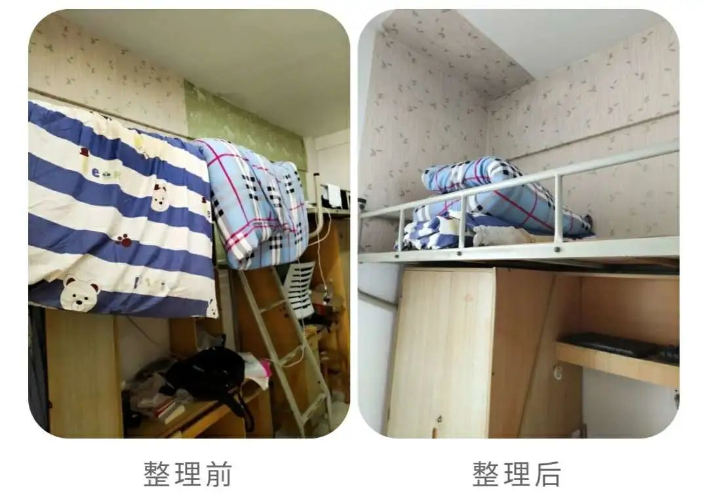
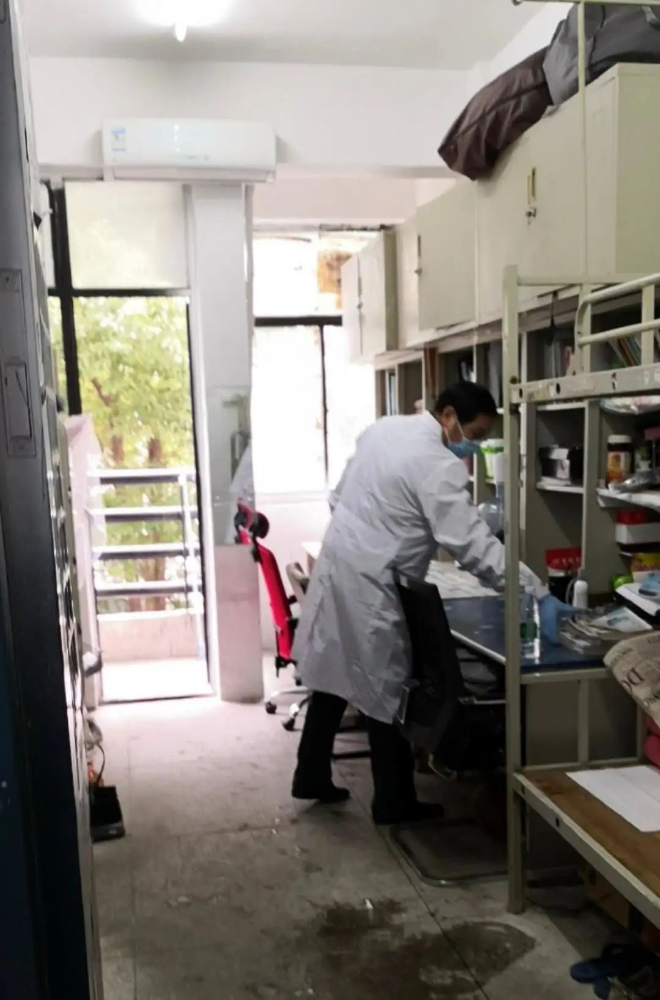

封城一月，一个武汉女人的抗疫史诗
原文链接 备份链接 小姨电话打进来时，蔡婷正坐在去隔离的转运车上。“外婆走了”，小姨在电话里哭。 那通两分钟的电话里，蔡婷没有哭——之后也没有。她上一次哭，还是一个星期前的2月5日，她拿到了核酸阴性的检测结果，而母亲也是单阳，明知患病但都 …
澎湃新闻记者 邓雅菲 实习生 陈紫嘉

武汉轻工大学工作人员在学生宿舍留下的便条。
“你的宝贝书桌太大，已转移至隔壁1208暂存，不会遗失，请放心！”2月24日，一位武汉轻工大学的学生发微博表示，学校被征用作为储备隔离点，在整理打包他的宿舍物品时，留下了这样一张便条。
2月24日，微博话题“武汉轻工大学的宝贝书桌”引起网友讨论和点赞。当日，武汉轻工大学在其官方微信上发布文章《别担心！你们的宝贝都会乖乖地等你归来》。
武汉轻工大学表示，学校各级领导干部、教师和辅导员亲自动手，对被征用的学生宿舍内现有物品进行仔细整理并妥善存放，且与学生现场连线，清点核对贵重物品。

武汉轻工大学宿舍整理前后对比图。
各高校“亲妈式”打包物品
2月18日，武汉市新型肺炎防控指挥部床位保障组发布了“关于下达16所省属高校集中隔离点储备任务”的紧急通知。
澎湃新闻（www.thepaper.cn）梳理发现，上述通知发布后，各高校纷纷发布微博或公告致信师生与学生家长，表示学校将妥善打包学生物品，并做好消毒工作。

武汉铁路职业技术学院的工作人员打包宿舍内学生物品。
2月18日，武昌首义学院在其官方微博上发布文章《给同学、家长和老师们的一封信》，信中提到，学校将借鉴其他已被征用房间学校的好的经验和方法，精心组织教职工对被征用宿舍内学生的个人物品清理、打包和存放。
2月19日，武汉铁路职业技术学院官方微博发帖称，“24小时，1000间寝室，老师们‘亲妈式’打包物品，宝贝每一位同学的宝贝，带走大家未带走的垃圾，请大家放心，相信老师，相信学校。”
同日，武汉交通职业学院在其官方微信上发布文章《武汉交通职业学院致全体师生和学生家长的一封信》，信中提到，学校将专门组建由党员干部和学生工作人员组成的宿舍清理工作队伍，对隔离寝室内所有物品进行打包，所有打包袋将注明寝室号及床位，做到全程可追溯，确保物品不损坏不遗失。
2月20日，长江工程职业技术学院在其官方微信上发布《致长江工程职业技术学院全体学生的一封信》，信中称，“每一位同学的衣服、书本、铺盖、玩偶等所有物品，都会由我们老师整理、打包。在整理打包的过程中，我们一定会像为自己即将远行的孩子整理行李一样，爱惜你们的物品。”
高校承诺彻底清洗消杀
除了妥善打包学生物品，作为储备隔离点的高校还承诺师生彻底做好消毒工作。
2月18日，武汉科技大学在其官方微信发布文章《武汉科技大学致全校师生和学生家长的一封信》，信中称，学校承诺，始终把全体师生员工的生命安全和身体健康放在第一位。如学生宿舍被正式征用，将细致做好同学个人财物的清理和集中封存保管工作，尽一切努力维护学生权益。无论最终是否投入使用，都将对有关场所进行全面、严格、彻底的清洗消杀，确保为广大师生提供安全卫生的学习生活环境。
2月20日，武汉工程大学在其官方微信发布通告称，学校会尽一切努力保障学生物品安全，贵重物品单独登记存放，确保学生物品安全隔离。最终无论学校学生公寓是否被作为隔离点投入使用，学校都会对学生公寓进行完全的、彻底的清洗消毒，达到医疗卫生检测标准，保证学生公寓无安全隐患。
2月18日，武汉市新型肺炎防控指挥部床位保障组发布了“关于下达16所省属高校集中隔离点储备任务”的紧急通知，通知提到，为加大隔离点储备建设力度，经省指挥部与省教育厅协调决定，将武汉科技大学等16所省属高校作为储备隔离点交由武汉市指挥部统一调度使用。
16所省属高校隔离点储备计划共计15000间，要求在2月20日前完成储备工作。
隔离房间将按照一人一间一床的原则进行储备，高校储备隔离点(征用高校内体育场馆等建筑用于建设方舱医院除外)主要用于发热病人和密切接触者的隔离观察，原则上不用于轻症患者治疗。

武汉市新增高校隔离点征用计划表。
床位保障组相关负责人接受采访时表示，“相关部门将根据防疫指挥部调度命令，视疫情实际情况需要，依法依规逐步实施储备计划。”6所省属高校隔离点分别为：湖北经济学院、武汉纺织大学外经贸学院(民办)、武汉铁路职业技术学院、长江工程职业技术学院、湖北工业大学、武昌首义学院(民办)、武汉科技大学、武汉工商学院(民办)、武汉职业技术学院、武汉交通职业学院、武汉纺织大学、江汉大学文理学院(民办)、武汉生物工程学院(民办)、武汉工程大学、湖北科技职业学院、武汉轻工大学。
本期编辑 常琛
推荐阅读


原文链接 备份链接 小姨电话打进来时，蔡婷正坐在去隔离的转运车上。“外婆走了”，小姨在电话里哭。 那通两分钟的电话里，蔡婷没有哭——之后也没有。她上一次哭，还是一个星期前的2月5日，她拿到了核酸阴性的检测结果，而母亲也是单阳，明知患病但都 …
原文链接 备份链接 01 泡面度日，住得提心吊胆 韩猛 | 滞留鄂州想回青岛 1月20日，我第一次和女朋友去她的鄂州老家。封城那天，我没注意到新闻。后来我租住在一个私人旅馆。当时旅馆被限制开放，外地人不予登记。我求了店主好久，最后商量成日 …
原文链接 备份链接 武汉封城后，美国、日本、澳大利亚等国， 纷纷派机撤侨。 谁走、谁留？ 困扰着武汉的国际家庭。 不少家庭选择让一方带着孩子离开， 也有不少选择全家留下。 一名常住武汉的法籍医生说， “疫情期间，我在武汉能做的比在法国 …
原文链接 备份链接 当陷入混乱的社会无暇顾及一个个具体的人的呼声时，陪伴已经是“社工共振”所能提供的最有价值的人性关怀。即便不能实实在在地立即满足需求，即时的回应和安慰也总比无人理会要好得多。“起码让他觉得，他不是一个孤岛。” 作者｜江婧 …
原文链接 备份链接 村委会将“福”字作为封条贴在门锁上。受访者供图 本文约3577字 预计阅读时间9分钟 作者 徐竞然 编辑 秦珍子 秦筝和妹妹在救护车上度过除夕夜。 车厢里，坐在对面的医护人员身着防护服，没有一寸皮肤暴露在外，秦筝隔着 …